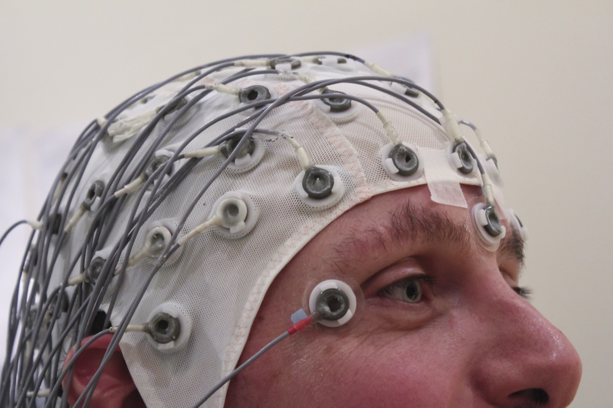

Executive Summary
캘리포니아 의회가 8월 30일 최종 통과시킨 AB 1883은 고용주가 직장 감시 도구에 AI를 얹어 직원의 감정 상태를 알아내거나 신경 데이터를 모으는 일을 금지한다. 9월 10일 오후 3시에 주지사에게 이송됐고, 이 글을 쓰는 9월 29일까지 입법부 공식 기록에는 서명도 거부도 올라오지 않았다. 상태는 여전히 '등록(Enrolled)'이고, 주 헌법이 정한 결정 시한은 9월 30일이다. 이 글은 조문 원문을 열어 이 금지가 무엇을 겨누고 무엇을 비워 두었는지를 본다.
조문에서 먼저 눈에 띄는 것은 금지 대상이 기기가 아니라는 점이다. 법이 정의한 '직장 감시 도구'는 사람이 직접 눈으로 보는 경우를 뺀 거의 모든 수집 수단을 담는다. 영상과 음성, 위치 추적, 심지어 근무 시간을 잘게 쪼개 재는 도구까지 한 정의 안에 들어간다. 그러니 금지선은 회사가 무슨 장비를 샀느냐가 아니라 그 장비가 무엇을 알아내려 했느냐에서 갈린다. 그런데 법은 '신경 데이터'를 한 문장으로 촘촘히 정의하면서, 금지의 나머지 절반인 '감정 상태'에는 정의를 붙이지 않았다.
집행 쪽에도 같은 모양의 빈자리가 있다. 제1582조는 노동청장과 검사를 집행 주체로 적었고 위반 1건당 최대 500달러의 벌금을 붙였다. 그런데 같은 조 (d)항 (2)호는 벌금을 받아 갈 사람으로 '직원'을 함께 적어 두었다. 직원이 소를 낼 수 있다고 정한 조항은 어디에도 없는데 지급 대상에는 이름이 올라 있다. 이 법안을 소개한 미국 로펌 글들이 개인 소송권의 유무를 서로 다르게 읽는 이유가 여기 있다.
1절부터 3절까지는 조문 원문에서 확인되는 사실이다. 4절은 그 사실에서 끌어낸 해석이다.
주요 수치
출처: 캘리포니아 입법부가 공개한 AB 1883 등록본 전문과 의안 이력을 직접 확인해 정리했다.
9월 30일
주지사 서명·거부 시한
9월 29일 현재 이력의 마지막 줄은 "9월 10일 오후 3시 주지사 이송"이다
500달러
위반 1건당 최대 벌금
법이 정한 최대치이고, '1건'을 사람 단위로 셀지 기간 단위로 셀지는 조문에 없다
1문장
안전 목적 예외의 길이
제1581조 (b)항이 전부다. '안전을 확보하기 위해'가 무엇인지는 정의도 증거 요건도 없다
0개
직원의 제소를 정한 조항
벌금이 직원에게 지급된다고는 적혀 있지만, 소를 낼 수 있다고 적은 조항은 없다
금지는 두 줄, 도구는 거의 전부
AB 1883은 노동법전 제2편에 제5.8부를 새로 만들고 제1580조부터 제1583조까지 네 개 조를 넣는다. 전체 분량은 A4 몇 장이고, 금지 자체는 제1581조 (a)항 두 줄이 전부다.
"(a) An employer shall not use a workplace surveillance tool that uses artificial intelligence on employees for either of the following: (1) Recognizing, or making inferences or predictions about, an individual's emotional state. (2) Collecting neural data."
캘리포니아 노동법전 제1581조 (a)항 (AB 1883 등록본)
우리말로 옮기면, 고용주는 AI를 사용하는 직장 감시 도구를 직원에게 다음 두 가지 목적으로 쓸 수 없다. 하나는 개인의 감정 상태를 인식하거나 그에 관해 추론 또는 예측하는 것이고, 다른 하나는 신경 데이터를 수집하는 것이다.
두 줄짜리 금지가 실제로 얼마나 넓은지는 앞 조항의 정의를 읽어야 보인다. 제1580조 (g)항이 정한 '직장 감시 도구'는 이렇다. 직원의 데이터·활동·통신·행위·생체정보·행동을 사람이 직접 관찰하는 방법이 아닌 수단으로 수집하거나 수집을 돕는 모든 시스템·응용프로그램·기구·장치. 예시로 이름이 올라간 것은 영상과 음성 감시, 근무 시간을 잘게 쪼개 이어 재는 도구, 위치정보, 전자기 추적, 광전자 추적, 광학 시스템이다. 목록 앞에 "이에 한정되지 아니한다"가 붙어 있으니 예시는 울타리가 아니다.
정의를 이렇게 넓게 잡아 두면 '우리가 쓰는 건 감시 도구가 아니다'라는 방어가 거의 성립하지 않는다. 출입 기록도, 통화 녹음도, 화면 활동 로그도 이 정의 안에 있다. 빠지는 것은 사람이 두 눈으로 보는 경우뿐이다. 관리자가 사무실을 한 바퀴 도는 일은 이 법의 대상이 아니고, 같은 장면을 찍은 카메라는 대상이 된다.
그래서 이 법의 금지선은 장비의 종류를 따라 그어지지 않는다. 도구는 이미 거의 전부 정의 안에 들어와 있고, 남는 변수는 그 신호를 어디에 썼는지 하나다. 같은 카메라, 같은 마이크, 같은 웨어러블이 목적에 따라 합법도 되고 위법도 된다.
예외는 제1581조 (b)항 한 문장이다. "이 조는 고용주가 안전을 확보하기 위해, 또는 그 밖에 (a)항의 요건에 해당하지 않는 방식으로 직장 감시 도구를 사용하는 것을 금지하지 아니한다." 졸음운전 감지처럼 안전을 내세울 수 있는 용도는 여기로 빠진다. 다만 '안전을 확보하기 위해'가 무엇인지 법은 정의하지 않았고, 그 주장을 뒷받침할 자료를 갖추라는 요건도 두지 않았다.
촘촘히 정의한 쪽과 비워 둔 쪽
제1580조는 낱말 일곱 개를 정의한다. 인공지능, 고용하다, 직원, 고용주, 신경 데이터, 검사, 직장 감시 도구. 금지 조항이 쓴 낱말 가운데 이 목록에 없는 것이 하나 있다. 감정 상태다.
2.1신경 데이터는 두 겹으로 정의돼 있다
신경 데이터의 정의는 이렇다. "직원의 중추 또는 말초 신경계의 활동을 측정하여 생성된 정보로서, 비신경 정보로부터 추론된 것이 아닌 것." 한 문장 안에 조건이 둘 들어 있다. 앞은 출처를 정하고, 뒤는 출처가 같아 보이는 것을 도로 걷어 낸다.

뒤 조건이 왜 필요했는지는 이 정의의 출처를 보면 알 수 있다. 같은 문장이 2024년 9월 28일 서명된 캘리포니아 SB 1223에 먼저 들어갔다. 그 법은 소비자 프라이버시법의 민감 개인정보 목록에 신경 데이터를 추가했고 2025년 1월 1일부터 시행됐다. 당시 입법 분석은 단서가 필요한 이유를 이렇게 설명했다. 사람의 모든 행동은 결국 신경계 활동에서 나오므로, 단서가 없으면 동공 확장이나 호흡수나 몸의 움직임처럼 신경 활동의 하류 효과까지 전부 신경 데이터가 되어 버린다는 것이다.
캘리포니아가 이 낱말을 처음 법에 올린 주도 아니다. 콜로라도가 2024년 4월 17일 서명한 HB 24-1058이 먼저였고, 몬태나가 2025년 유전정보 보호법을 고쳐 뒤따랐으며, 코네티컷은 같은 해 6월 24일 서명한 SB 1295로 합류했다. 넷이 같은 낱말을 네 가지로 그었다. 코네티컷은 중추신경계만 재고 말초를 뺐다. 콜로라도는 중추와 말초를 다 담되 그 정보가 개인을 특정하는 데 쓰일 때만 보호가 걸리도록 문을 좁혔다. 몬태나는 하류 효과를 빼면서 동공 확장과 몸의 움직임과 호흡수를 조문에 직접 적어 넣었다. 그래서 손목에서 재는 피부 전도도 같은 말초 신호는 어느 주에서는 정의 안에 있고 어느 주에서는 처음부터 밖에 있다.
다만 넷 모두 소비자를 지키는 법이다. 콜로라도 프라이버시법이 말하는 소비자는 개인이나 가정의 자격으로 행동하는 주민이고, 정의 조항은 "상업적 또는 고용 맥락에서 행동하는 개인, 구직자, 고용 맥락에서 행동하는 사람의 수익자는 포함하지 아니한다"고 적는다. 코네티컷 법도 같은 자리에 같은 취지의 문장을 둔다. 신경 데이터를 민감 정보 목록에 올려도 고용주가 자기 직원에게서 그것을 걷는 장면에는 손이 닿지 않는다. 캘리포니아는 사정이 조금 낫다. 소비자 프라이버시법의 인사 데이터 예외가 2022년 말로 끝나 직원 데이터도 대상에 들어왔다. 그래도 거기서 신경 데이터에 붙는 것은 고지와 이용 제한 요구권이지 금지가 아니다.
AB 1883은 그 문장을 소비자 프라이버시법에서 노동법으로 그대로 옮겨 왔다. 그러면서 성격이 바뀌었다. 소비자법에서는 신경 데이터가 '동의를 받고 다뤄야 할 민감 정보'였는데, 노동법으로 건너오자 '직장에서는 동의와 무관하게 모을 수 없는 것'이 됐다. 근로자 동의가 자유로운 동의로 보기 어렵다는 판단이 뒤에 깔린 설계이고, 이 점에서 직장과 교육기관의 감정 추론을 의료·안전 목적만 빼고 금지한 EU AI법 제5조 제1항 (f)호와 계열이 같다.
2.2걷어 낸 신호가 옆 조항으로 들어간다
여기서 두 금지가 맞물린다. 신경 데이터의 정의에서 빠진 비신경 정보, 곧 표정과 목소리와 심박과 호흡은 시중에 팔리는 감정 인식 도구가 실제로 쓰는 신호다. 뇌파를 재는 회사는 드물어도 콜센터 통화에서 목소리 톤을 뽑는 회사는 드물지 않다. 그 신호로 기분을 알아내려 하면 (a)항 (2)호가 아니라 (a)항 (1)호에 걸린다. 두 조항이 함께 있어야 금지가 닫히도록 설계된 셈이다.
문제는 닫히는 쪽 조항에 정의가 없다는 점이다. 무엇이 감정 상태인지 법이 말하지 않았다. 피로는 감정인가. 이직 의사는 감정인가. 통화 상대가 아니라 상담사의 목소리에서 '좌절'을 뽑아내는 기능은 어느 칸에 들어가나. 한 감시 도구가 '친절도 점수'를 매긴다면 그것은 감정 상태를 추론한 것인가, 발화 내용을 센 것인가.
마지막 물음은 가정이 아니다. 버거킹이 2026년 2월 드라이브스루에 도입한 헤드셋 AI는 처음에 "어서 오세요"나 "감사합니다" 같은 표현이 나왔는지를 세는 방식으로 직원 응대를 코칭했다. 회사는 이후 목소리의 톤과 감정 신호까지 잡는 방향으로 기능을 넓히고 있다고 밝혔고, 개별 직원 평가용은 아니라는 입장도 함께 냈다. 낱말을 세는 단계와 톤을 읽는 단계 사이 어딘가에 이 법의 선이 있는데, 그 선이 정확히 어디인지는 조문만으로 알 수 없다.
정의가 촘촘한 쪽은 회사가 대응하기 쉽다. 뇌파 측정 장비를 안 쓴다는 사실은 구매 대장 한 장으로 보인다. 정의가 비어 있는 쪽은 반대다. 우리 도구가 감정 상태를 추론하지 않는다는 것은 장비 목록으로 보일 수 없고, 그 도구가 무엇을 입력받아 무엇을 내놓는지의 기록으로만 보인다.
직원은 벌금을 받는 자리에만 적혀 있다
제1582조가 집행을 정한다. (a)항은 노동청장에게 조사와 시정명령, 과태료 고지, 민사소송 제기 권한을 준다. (b)항은 검사도 이 부를 집행할 수 있다고 정한다. (c)항은 "(a)항 또는 (b)항에 따라 제기된 민사소송에서" 신청인이 임시 또는 예비 금지명령과 징벌적 손해배상, 합리적인 변호사 비용을 구할 수 있다고 적었다. (d)항 (1)호가 벌금이다. 이 부를 위반한 고용주는 위반 1건당 500달러 이하의 벌금을 물 수 있다.
여기까지는 공적 집행 구조다. 입법부 법률고문실이 작성한 의안 요지도 그렇게 요약했다. "이 법안은 노동청장 또는 검사가 법안의 규정을 집행할 수 있도록 한다." 요지 어디에도 개인 소송권은 나오지 않는다.
그런데 바로 다음 호에서 결이 달라진다.
"(2) An employee, the Labor Commissioner, or a public prosecutor may recover a penalty under this part as a statutory penalty paid to the employee or a civil penalty, but not both, for the same violation."
캘리포니아 노동법전 제1582조 (d)항 (2)호 (AB 1883 등록본)
직원과 노동청장과 검사가 벌금을 받아 갈 수 있고, 같은 위반에 대해 직원에게 지급되는 법정 벌금과 민사 벌금을 둘 다 받을 수는 없다는 뜻이다. 조문이 셋을 적은 순서에서도 직원이 맨 앞이다. 그러나 앞의 (a)항과 (b)항 어디에도 직원이 소를 낼 수 있다는 말은 없고, (c)항은 민사소송을 (a)항과 (b)항에 따라 제기된 것으로 한정한다.
이 어긋남이 실제로 해석을 갈랐다. 프로스카우어는 9월에 낸 분석에서 이 법안이 공적 집행에 더해 개인 소송권을 둔다고 읽었고, 금지명령과 징벌적 손해배상과 변호사 비용을 개인이 구할 수 있는 구제수단으로 열거했다. 법률고문실 요지는 같은 조문을 놓고 집행 주체를 둘만 적었다. 조문의 문면만 놓고 보면 직원은 받아 갈 자리에는 있고 문을 여는 자리에는 없다. 서명이 되더라도 이 물음은 법원이 처음 답할 때까지 열려 있을 것이다.
벌금 조항은 액수를 적으면서 세는 법을 적지 않았다. 500달러는 정액이 아니라 상한이고, 무엇을 1건으로 볼지는 조문에 없다. 감시당한 직원 한 명이 1건인지, 도구를 돌린 날이 1건인지, 급여 지급 주기마다 새로 쌓이는지에 따라 총액의 자릿수가 달라진다. 그래서 숫자만 보고 작다고 판단하기 어렵다.
3.1적용 범위와 남은 일정
적용 대상은 넓다. 제1580조 (d)항은 고용주에 주 정부 전 부처와 캘리포니아대학교, 주립대학, 시·군·특별구·교육구 같은 공공기관을 포함시켰고, 인력 공급업체와 농업·해외 인력 중개업자, 그런 업체와 계약한 원청까지 끌어들였다. 제1582조 (f)항은 이 법이 더 강한 보호를 두는 지방 조례를 밀어내지 않는다고 못 박았다. 제1583조의 예외는 국가 공역용 항공기 개발과 국가안보·군사·우주·방위 목적 제품·서비스 개발에 한정되고, 그중에서도 연방 법령이나 규정, 구속력 있는 연방 계약을 지키는 데 합리적으로 필요한 범위에서만 인정된다.
긴급 조항은 없다. 정기 회기에서 제정된 법은 통상 다음 해 1월 1일에 발효하므로, 시한 안에 서명되면 2027년 1월 1일부터 적용된다. 거부되면 의회가 3분의 2로 재의결하지 않는 한 법안은 사라진다. 통과 표결은 하원 52 대 12, 상원 28 대 9, 상원 수정안에 대한 하원 동의 56 대 8이었다.
페블러스가 이 법안을 주목하는 이유
여기서부터는 조문에서 확인되는 사실이 아니라 이 글의 해석이다.
규제가 기기를 지목하면 회사는 그 기기를 치우는 것으로 답할 수 있다. 목적을 지목하면 그 방법이 통하지 않는다. 카메라는 그대로 두고 카메라가 하는 일만 바뀌었을 때, 밖에서 보이는 것은 아무것도 달라지지 않는다. 똑같은 화면, 똑같은 로그, 똑같은 벤더 계약이다. 달라진 것은 모델에 무엇이 들어가고 무엇이 나오느냐뿐인데, 그 변화는 장비 대장에 기록되지 않는다.
그래서 이 법이 회사에 실제로 시키는 일은 감정을 안 재는 데서 끝나지 않는다. 안 쟀다는 것을 보여 줄 수 있어야 한다. 없음을 증명하는 일은 원래 어렵다. 단서를 지운다고 증명이 되지는 않는다. 남긴 단서가 앞뒤로 맞물려야 증명이 된다. 어떤 신호를 왜 받았고, 모델이 무엇을 내놓았고, 그 출력이 누구에게 어떤 결정으로 전달됐는지가 한 줄로 이어질 때에만 '우리 도구는 관찰까지만 한다'는 말이 진술이 아니라 판정이 된다.
코네티컷의 해고 신고 조항도 같은 자리에서 멈췄다. 그쪽은 답을 적으라고 하면서 근거를 묻지 않았고, 이쪽은 하지 말라고 하면서 안 했다는 증거를 어디에 남기라고 말하지 않는다. 규제가 데이터의 종류와 추론의 목적을 기준으로 쓰이기 시작하면, 회사 쪽 답변의 품질은 규정 해석 능력이 아니라 데이터 계보의 상태로 결정된다.
4.1한국에는 이미 문서 의무가 먼저 와 있다
한국에는 신경 데이터만 따로 다루는 법이 아직 없다. 그렇다고 이 물음이 남의 일인 것은 아니다. 2026년 1월 22일 시행된 인공지능 발전과 신뢰 기반 조성 등에 관한 기본법은 채용과 생체인식을 고영향 인공지능의 적용 영역으로 이름 붙였고, 그 영역에 해당하면서 생명·신체 안전이나 기본권에 중대한 영향을 미칠 우려가 있으면 사업자에게 위험관리와 설명 방안 수립, 사람의 관리·감독 같은 의무가 붙는다. 시행령은 그 조치의 근거를 문서로 만들어 5년간 보관하도록 정했다.
순서가 캘리포니아와 반대다. 캘리포니아는 금지를 먼저 쓰고 증거 요건을 비워 두었고, 한국은 금지 목록 없이 문서 보관 의무를 먼저 세웠다. 어느 쪽이든 회사가 내놓아야 할 실물은 하나다. 그 도구에 어떤 신호가 들어가는지, 무엇을 추론하는지, 그 판단이 어디로 흘러가는지를 적은 문서다. 개인정보보호법의 민감정보 규정이 생체정보를 이미 다루고 있으니, 콜센터 음성이나 웨어러블 측정치를 감정 분석에 쓰는 순간 걸리는 조문은 하나가 아니다.
콜센터와 웨어러블을 나란히 놓는 일은 이미 한국에서 벌어졌다. 카이스트와 중앙대학교, 미국 애크런대학교 연구진이 2024년 9월에 낸 논문은 콜센터를 운영하는 여섯 개 회사에서 실제로 일하는 감정노동자 31명을 실험실로 불렀다. 전문 배우가 화내는 고객을 연기하는 동안 참가자는 네 가지 장비를 몸에 달았다. 통화용 헤드셋, 심전도를 재는 가슴 벨트, 피부 전도도와 체온을 재는 손목 밴드, 그리고 이마 두 곳과 귀 뒤 두 곳에서 초당 256번 뇌파를 읽는 헤드밴드다. 통화가 끝날 때마다 참가자는 진짜 감정을 숨기는 데 든 노력을 1부터 20까지로 적었고, 그 값을 두 단계나 세 단계로 가르는 모델의 정확도가 최대 87%까지 올라갔다. 네 번째 장비가 읽은 것은 AB 1883의 정의로 보면 논란의 여지가 없는 신경 데이터다.
이 연구는 기관생명윤리위원회 승인을 받고 동의를 얻어 진행한 것이고 목적도 상담사의 정신건강 쪽이었다. 그런데 논문이 윤리 항목에 스스로 적어 둔 걱정이 이 법안이 겨눈 자리와 겹친다. 저자들은 같은 기술이 직장 감시로 읽힐 수 있고 성과 평가의 또 다른 계량 항목이 될 수 있다는 점을 짚은 뒤, 관리자가 감정 부하 데이터를 쓰려 할 때 원자료 접근을 제한하는 법이 국가 차원에서 마련돼야 한다고 적었다. 요청의 모양은 캘리포니아와 다르다. 연구진은 모으되 관리자가 원자료에 닿지 못하게 하자고 했고, 캘리포니아는 아예 모으지 말라고 했다. 답은 갈렸지만 둘 다 관리자가 그 자료에 닿는 순간을 문제로 봤다.
확인은 법을 기다릴 일이 아니다. 지금 회사에 들어와 있는 감시성 도구를 하나 골라 벤더에게 물어보면 된다. 이 제품이 내놓는 출력 항목 전체가 무엇인지, 그중에 사람의 상태나 태도를 점수로 매기는 항목이 있는지, 그 점수가 어떤 신호에서 계산되는지. 대답이 계약서나 제품 문서에 없다면, 없는 것은 그 기능이 아니라 그 기능이 없다는 증거다.
여기까지 읽어 주셔서 감사하다. 이 글이 인용한 조문은 AB 1883 등록본 전문에서 그대로 확인할 수 있다. 벤더에게 그 목록을 실제로 받아 보셨다면, 무엇이 적혀 있고 무엇이 안 적혀 있었는지 이야기를 나눠 주시면 좋겠다.
참고문헌
법령·공식 문서
- 1.California Legislature. (2026). AB-1883 Workplace surveillance tools — 등록본 전문. leginfo.legislature.ca.gov
- 2.California Legislature. (2026). AB-1883 Bill History. leginfo.legislature.ca.gov
- 3.California Legislature. (2024). SB-1223 Consumer privacy: sensitive personal information: neural data. leginfo.legislature.ca.gov
- 4.Colorado General Assembly. (2024). HB 24-1058 Protect Privacy of Biological Data. content.leg.colorado.gov
- 5.Colorado Revised Statutes §6-1-1303 (Colorado Privacy Act, Definitions). law.justia.com
- 6.Connecticut General Assembly. (2025). Substitute Senate Bill No. 1295 — Public Act No. 25-113. cga.ct.gov
- 7.Montana Legislature. (2025). SB 163 (유전정보 보호법 개정). archive.legmt.gov
- 8.California Assembly Committee on Privacy and Consumer Protection. (2024-07-02). SB 1223 (Becker) Bill Analysis. apcp.assembly.ca.gov
- 9.European Union. Artificial Intelligence Act, Article 5(1)(f). artificialintelligenceact.eu
- 10.과학기술정보통신부. 「인공지능 발전과 신뢰 기반 조성 등에 관한 기본법」 및 시행령 (2026-01-22 시행). law.go.kr
학술 논문
- 11.Park, E., Lee, D., Han, Y., Diefendorff, J., & Lee, U. (2024). Hide-and-Seek: Detecting Workers' Emotional Workload in Emotional Labor Contexts Using Multimodal Sensing. Proc. ACM IMWUT 8(3), Article 119. doi.org/10.1145/3678593
업계·보도·분석
- 12.HR Dive. (2026). California ban on workplace AI emotion surveillance heads to Newsom. hrdive.com
- 13.Proskauer, California Employment Law Update. (2026-09). California Legislature Takes Aim at AI-Powered Mind Reading, But Questions Remain. calemploymentlawupdate.proskauer.com
- 14.Future of Privacy Forum. (2025-08-12). The "Neural Data" Goldilocks Problem: Defining "Neural Data" in U.S. State Privacy Laws. fpf.org